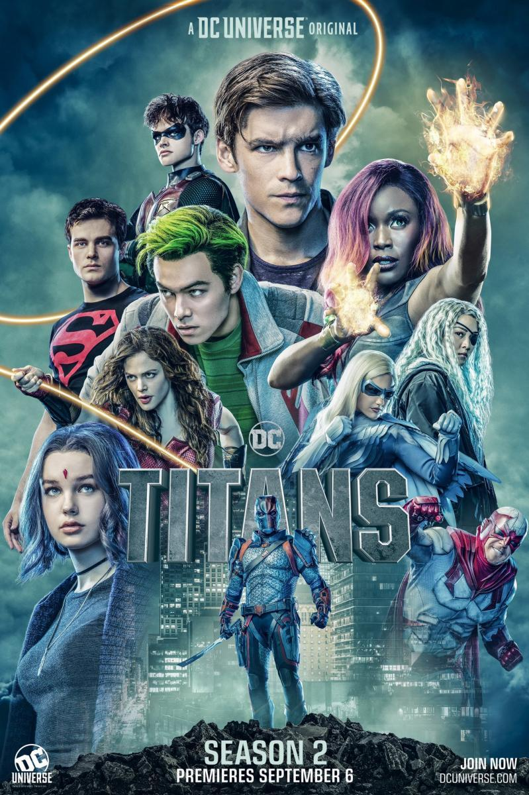

TITANS
Se trata de una reunión de distintos personajes de los cómics de DC que se unen para formar un grupo de jóvenes superhéroes.
El antiguo compañero de Batman, Nightwing, se encuentra con una serie de jóvenes héroes con problemas que necesitan un mentor desesperadamente para volver a encauzar sus vidas. Cuando Robin y Raven necesitan ayuda para lidiar con un complot que amenaza con destruir el planeta, se unen con Starfire y Chico Bestia, formando los Titanes. Los Titanes se presentan como una Liga de la Justicia Junior, en el que además de los mencionados, están otros superhéroes como Kid Flash, Aqualad, Wonder Girl y Speedy. Los pertenecientes a esta nueva Liga aprenderán a utilizar y controlar sus poderes.
